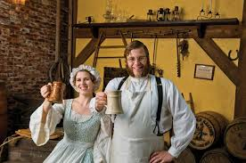

One of the oldest breweries in Canada, in a massive ironstone and granite building (c 1820). Animators in period costume and character bring 1863 Halifax to life in song and story as they lead guests through Alexander Keith’s beautifully detailed brewhouse and taproom (1-hr tours for all ages, with samples).

Founded in 1820, Alexander Keith's is a brewery in Halifax, Canada. It is one of the oldest commercial breweries in all of North America.[citation needed] It was founded by Alexander Keith who emigrated from Scotland in 1817. Today, the brewery is under the control of Labatt, a subsidiary of Anheuser–Busch InBev. The brewery also produces Oland Brewery beers, distributed in Eastern Canada.
In April 2011, Anheuser–Busch InBev began selling Alexander Keith's beer in the United States after nearly two centuries of being available in Canada alone.[1]
Keith's brewery produces Keith's India Pale Ale, Keith's Red Amber Ale, Keith's Premium White, Keith's Light Ale,[2] and Keith's Nova Scotia Style Pale Ale, Keith's Nova Scotia Style Lager, and Keith's Nova Scotia Style Brown Ale for US markets. Keith's first, most popular, and most widely distributed beer is its India Pale Ale.[3] Keith's has also produced Keith's Ambrosia Blonde, Keith's Harvest Ale, and Keith's Tartan Ale as seasonal brews. Originally brewed in the Halifax brewery, Anheuser–Busch InBev expanded production of Alexander Keith's beers to breweries in Ontario (London), Quebec (Montreal), Newfoundland (St. John's), British Columbia (Creston), and New York State (Baldwinsville),[1][nb 1] in addition to the original Halifax brewery which now produces beer for all of the Maritime provinces.